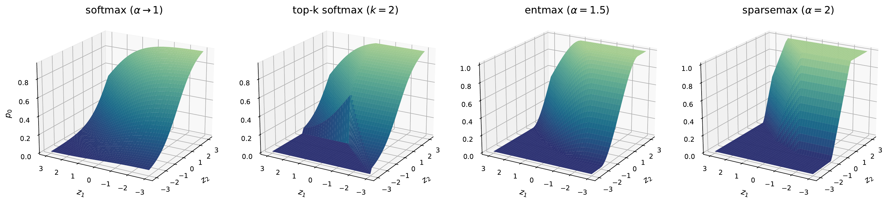
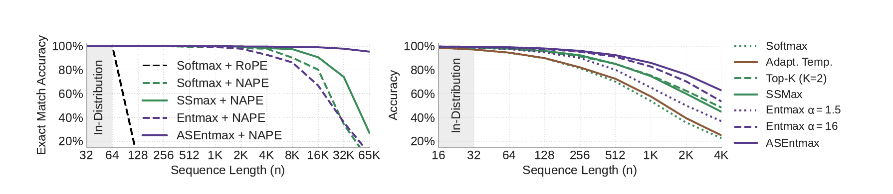
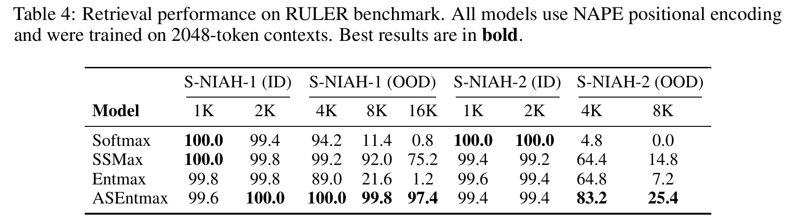

Sparse Attention · Part I
Why sparse, why adaptive, and the classical problem behind thresholds
This two-part blog post is my attempt to write down, carefully, what is actually known about sparse attention. Part I makes three arguments. First, that softmax attention must flatten as context grows. Second, that once exact zeros are allowed, a fixed cutoff \(k\) is an arbitrary choice with empirical consequences. And third, the thresholding methods in use today are all instances of one family of regularized prediction maps. In fact, this family is rooted in a classical resource-allocation problem that optimization has studied for decades (or even centuries, some may say).
1. Introduction
The transformer's attention layer computes, for each query, a weighted average of value vectors, with weights produced by softmax over query-key scores (Vaswani et al., 2017). But why softmax? My honest guess: it is a convenient choice as it is easy to compute and it is the most well-known transformation of raw scores into probability. However, softmax never outputs an exact zero probability, so every token in the context, relevant or not, receives a positive mass. For most of the transformer era this was treated as a harmless implementation detail. The argument of this series is that it is not a detail. At long context it is a provable failure mode, and the fixes deployed against it are more classical than the literature acknowledges.
Why write a detailed post about this? Because of a reflex I keep meeting, in reviews, in reading groups, and in myself. When you say "sparse attention", people immediately hear "fixed patterns" or "top-\(k\) attention". I can honestly see why: if the sparsity is structured, as in fixed windows or strided blocks, it maps well to hardware but decides in advance who may attend to whom; if it is unstructured, chosen at runtime by the input, people believe it cannot possibly be fast on GPUs. This creates a false dichotomy that has costly consequences for training and deploying LLMs today: either use exact softmax attention accelerated by FlashAttention, or give up exactness and resort to a top-\(k\) approximation to beat it. Let us break this dichotomy apart!
In the first part, I will show that top-\(k\) is not what sparse attention is. Instead, it is one member of a family of thresholded maps that is older, richer, and well understood mathematically. For example, sparsemax has been used for attention for 10 years (Martins & Astudillo, 2016), and α-entmax generalizes both softmax and sparsemax (Peters, Niculae & Martins, 2019). Part II will show that unstructured, input-dependent sparsity is efficient on modern GPUs, not despite the hardware but because of what the hardware has become. The belief that unstructured sparsity was slow was reasonable once, but it is not true today. For example, fused Triton kernels for exact α-entmax attention exist (Gonçalves et al., 2025), and the current generation can be more than 2x faster than FlashAttention-2 (Gonçalves et al., 2026).
Notation. A single query attends over \(n\) keys with scores \(\mathbf z\in\mathbb R^n\); a normalizing map turns \(\mathbf z\) into weights \(\mathbf p\) on the probability simplex \(\triangle^{n}:=\{\mathbf p\in\mathbb R^n : \mathbf p\ge 0,\ \mathbf 1^\top\mathbf p=1\}\). I write \(k\) for a cardinality, \(\tau\) for a normalizing threshold, \(\alpha\) for the Tsallis index, \([t]_+ := \max\{t,0\}\), \(S(\mathbf p):=\{i : p_i>0\}\) for the support, \(H(\mathbf p)\) for Shannon entropy in nats, \(\Delta := \max_i z_i - \min_i z_i\) for the score spread, and \(\theta>0\) for a temperature, so that \(\operatorname{softmax}_\theta(\mathbf z)_i = e^{z_i/\theta}\big/\sum_j e^{z_j/\theta}\). Everything else is defined where it first appears.
2. Attention maps beyond softmax
Before asking what goes wrong with softmax, it is worth asking what softmax is.
2.1 Regularized prediction maps
Let us pose the problem of transforming scores into probabilities as an optimization: find the distribution that favors high scores, moderated by a convex regularizer \(\Omega\),
$$\pi_\Omega(\mathbf z) \;=\; \arg\max_{\mathbf p\,\in\,\triangle^n}\ \langle \mathbf z, \mathbf p\rangle \;-\; \Omega(\mathbf p).$$With no regularizer at all, the maximizer of a linear function over the simplex is a vertex, all mass on the single largest score, i.e. argmax (Dantzig, 1955). The regularizer spreads the mass, and how it spreads it is determined entirely by the choice of \(\Omega\). This framing was developed for attention precisely to put softmax and its sparse alternatives in one picture by Niculae & Blondel (2017). The general theory of these maps and their losses is laid out by Blondel, Martins & Niculae (2020) under the Fenchel-Young losses framework.
2.2 Softmax
Take \(\Omega(\mathbf p) = \sum_i p_i\log p_i\), the negative Shannon entropy. Then \(\pi_\Omega(\mathbf z) = \operatorname{softmax}(\mathbf z)\), and the familiar normalizing constant is a threshold in disguise:
$$p_i \;=\; e^{\,z_i - \tau}, \qquad \tau \;=\; \log\textstyle\sum_j e^{z_j},$$with \(\tau\), the log-partition function, playing the role of the Lagrange multiplier of the sum-to-one constraint. Every weight is strictly positive, whatever the scores are.
Derivation (Lagrangian and KKT conditions)
Form the Lagrangian with a multiplier \(\tau'\in\mathbb R\) for the constraint \(\mathbf 1^\top\mathbf p = 1\) and multipliers \(\mu_i\ge 0\) for \(p_i \ge 0\): $$L(\mathbf p, \tau', \boldsymbol\mu) \;=\; \sum_i z_i p_i \;-\; \sum_i p_i\log p_i \;-\; \tau'\Bigl(\sum_i p_i - 1\Bigr) \;+\; \sum_i \mu_i p_i.$$ Stationarity in \(p_i\) gives \(\;z_i - (1 + \log p_i) - \tau' + \mu_i = 0.\) Here is the key observation: as \(p_i \to 0^+\) the term \(-\log p_i\) blows up to \(+\infty\), so stationarity cannot hold at \(p_i = 0\) for any finite multipliers. The entropy's slope is infinite at the boundary of the simplex, which forces every coordinate strictly inside; complementary slackness (\(\mu_i p_i = 0\)) then gives \(\mu_i = 0\) for all \(i\). Solving, \(\log p_i = z_i - 1 - \tau'\), i.e. \(p_i = e^{\,z_i}\,e^{-1-\tau'}\), and the constraint \(\sum_i p_i = 1\) fixes the constant: \(e^{\,1+\tau'} = \sum_j e^{z_j}\). Hence \(p_i = e^{z_i}\big/\sum_j e^{z_j}\), and writing \(\tau := 1+\tau' = \log\sum_j e^{z_j}\) (the log-partition function) gives the threshold form \(p_i = e^{\,z_i-\tau}\). The objective is strictly concave on the simplex, so this stationary point is the unique maximizer. ∎
Two things in that derivation deserve names, because the whole series turns on them. The normalization is a 1D problem: a single number \(\tau\) is adjusted until the weights sum to one, and each weight responds to its own score through a fixed gate. In this case, the gate is \(e^{\,z_i-\tau}\), with \(\tau = \log\textstyle\sum_j e^{z_j}\) recovered in closed-form.
What a beauty! This means the reason softmax can never produce a zero is a property of the regularizer, and not because softmax is defined through an exp function. Shannon entropy has infinite slope at the boundary of the simplex, so the optimum is always interior. Change the regularizer to one with finite slope at zero, and the boundary becomes reachable. That is the key idea behind sparse attention maps.
2.3 Sparsemax and α-entmax
Now, take a quadratic regularizer, \(\Omega(\mathbf p) = \tfrac12\|\mathbf p\|_2^2\), which makes \(\pi_\Omega\) the Euclidean projection of \(\mathbf z\) onto the simplex. This is a well-known problem for decades. In ML, this map is known as sparsemax (Martins & Astudillo, 2016), and its solution is a clipped shift, \(p_i = [z_i - \tau]_+\), with \(\tau\) chosen so the positive parts sum to one. That means that scores below \(\tau\) get exactly zero. Sparsemax's contribution was not the projection algorithm itself, but recognizing Euclidean simplex projection as a useful neural prediction map and deriving its loss and Jacobian.
A continuous family between softmax and sparsemax comes from replacing Shannon entropy by the Tsallis entropies \(H_\alpha(\mathbf p) = \frac{1}{\alpha(\alpha-1)}\sum_i (p_i - p_i^\alpha)\) (Tsallis, 1988). Setting \(\Omega = -H_\alpha\) with \(\alpha > 1\) yields the α-entmax map of Peters, Niculae & Martins (2019), in closed form:
$$\alpha\text{-entmax}(\mathbf z) \;=\; \bigl[(\alpha-1)\,\mathbf z - \tau(\mathbf z)\,\mathbf 1\bigr]_+^{1/(\alpha-1)},$$where \(\tau(\mathbf z)\) is the unique constant making the output sum to one. Coordinates with \((\alpha-1)z_i \le \tau\) receive exactly zero. The limit \(\alpha\to 1\) recovers softmax. Setting \(\alpha=2\) yields sparsemax, and larger \(\alpha\) gives a stronger propensity to sparsity.
Derivation (KKT conditions, step by step)
Same Lagrangian as in §2.2, with \(-\sum_i p_i \log p_i\) replaced by \(H_\alpha(\mathbf p)\). Since \(\partial H_\alpha/\partial p_i = \frac{1}{\alpha(\alpha-1)}\bigl(1 - \alpha\,p_i^{\alpha-1}\bigr)\), stationarity in \(p_i\) reads $$z_i \;+\; \frac{1 - \alpha\,p_i^{\alpha-1}}{\alpha(\alpha-1)} \;-\; \tau' \;+\; \mu_i \;=\; 0.$$ Unlike the Shannon case, every term here is finite at \(p_i = 0\): the boundary is reachable, and complementary slackness (\(\mu_i p_i = 0\)) leaves two cases. If \(p_i > 0\): then \(\mu_i = 0\), and solving for \(p_i\) gives \(p_i^{\alpha-1} = \tfrac1\alpha + (\alpha-1)(z_i - \tau')\); absorbing the constants into a rescaled threshold \(\tau := (\alpha-1)\tau' - \tfrac1\alpha\), this is exactly \(p_i = \bigl[(\alpha-1)z_i - \tau\bigr]^{1/(\alpha-1)}\). If \(p_i = 0\): then \(\mu_i \ge 0\) requires \((\alpha-1)z_i - \tau \le 0\). Both cases are summarized by the clipped form \(p_i = [(\alpha-1)z_i - \tau]_+^{1/(\alpha-1)}\). For existence and uniqueness of \(\tau\): the normalization function \(\tau \mapsto \sum_i [(\alpha-1)z_i-\tau]_+^{1/(\alpha-1)}\) is continuous, strictly decreasing wherever it is positive, at least \(1\) at \(\tau = (\alpha-1)\max_j z_j - 1\), and \(0\) for \(\tau \ge (\alpha-1)\max_j z_j\), so it crosses \(1\) exactly once; strict concavity of the objective gives uniqueness of \(\mathbf p\). Setting \(\alpha = 2\) makes the gate \([z_i - \tau]_+\), i.e. sparsemax; as \(\alpha \to 1^+\) the gate \([1 + (\alpha-1)t]_+^{1/(\alpha-1)} \to e^{t}\) (the \(q\)-exponential limit), recovering softmax. ∎
From this we can conclude that every one of these maps is a monotone gate applied to "score minus threshold," and the regularizer decides the gate.
- Shannon entropy gives the exponential gate and forbids zeros; the quadratic gives the linear gate and allows them.
- Tsallis interpolates, with the exponent \(1/(\alpha-1)\) controlling how gradually a token enters the support.

Fig. 1. Visualization of \(\alpha\)-entmax for different values of \(\alpha\). We also include top-\(k\) softmax with \(k=2\) for completeness. Each panel shows how the probability mass of \(p_0\) varies for the input \(\mathbf z = [0, z_1, z_2]\). For softmax, \(p_0\) is always non-zero, regardless of \(z_1\) and \(z_2\). As \(\alpha\) increases, \(\alpha\)-entmax increasingly assigns exactly zero probability to \(z_0\). α-entmax remains continuous as coordinates enter or leave the support; for \(\alpha<2\), its first derivatives are continuous too. Sparsemax, at \(\alpha=2\), remains continuous but has kinks at support boundaries. Top-\(k\) softmax changes the selected set abruptly, so its output jumps when the ranking swaps.
2.4 The Fenchel–Young perspective
We have now derived the softmax and α-entmax gates from two particular regularizers. The Fenchel-Young framework of §2.1 turns the pattern into a general result. The gate, the threshold equation, and the possibility of exact zeros all follow from the one-coordinate regularizer Blondel, Martins & Niculae (2020).
The reduction to root-finding, and the sparsity criterion (Blondel et al. (2020), Props. 9 and 6). Let \(g:[0,1]\to\mathbb R\) be strictly convex and differentiable, and \(\Omega(\mathbf p) = \sum_i g(p_i)\). Then
$$\pi_\Omega(\mathbf z) = \mathbf p(\tau^\star),\qquad p_i(\tau) = (g')^{-1}\bigl(\max\{\,z_i - \tau,\ g'(0)\,\}\bigr),$$where \(\tau^\star\) is the root of the nonincreasing equation \(\sum_i p_i(\tau) = 1\), guaranteed to lie in \([\max_i z_i - g'(1),\ \max_i z_i - g'(1/n)]\). More generally, a finite lower-boundary slope \(g'(0^+)>-\infty\) is what lets the prediction map reach zero. For separable generalized entropies, the associated loss has a separation margin when subgradients exist at both ends; for every regularizer in the table below, the upper endpoint is finite, so the criterion reduces to \(g'(0^+)>-\infty\). This holds for Tsallis entropies with \(\alpha>1\), but not for Shannon entropy, whose derivative \(1+\log t\) blows down at zero.
Proof sketch
KKT once more gives \(z_i - g'(p_i) - \tau + \mu_i = 0\). Where \(p_i>0\), \(p_i = (g')^{-1}(z_i-\tau)\); where \(p_i=0\), feasibility of \(\mu_i\ge0\) requires \(z_i - \tau \le g'(0)\). Monotonicity of \((g')^{-1}\) makes \(\sum_i p_i(\tau)\) nonincreasing in \(\tau\), so the threshold is found by any bracketing method. Full statements in Blondel et al. (2020). ∎
Read \((g')^{-1}\) as the gate. Each operator below is one choice of feasible set and regularizer, and one boundary derivative, \(g'(0^+)\), decides whether the gate can shut completely:
| Feasible set | Regularizer \(g(t)\) | Gate (response to \(z_i-\tau\)) | Operator | Exact zeros? |
|---|---|---|---|---|
| \(\triangle^n\) | \(t\log t\) (Shannon) | \(e^{\,z_i-\tau}\) | softmax; \(\tau=\log\sum_j e^{z_j}\) | no — \(g'(0)=-\infty\) |
| \(\triangle^n\) | \(\tfrac12 t^2\) (Gini) | \([z_i-\tau]_+\) | sparsemax | yes |
| \(\triangle^n\) | \(\frac{t^\alpha-t}{\alpha(\alpha-1)}\), \(\alpha>1\) | \([(\alpha-1)z_i-\tau]_+^{1/(\alpha-1)}\) | α-entmax | yes |
| \(\triangle^n,\ \mathbf p\le\mathbf u\) | \(\tfrac12 t^2\) / \(t\log t\) | \(\min\{u_i,[z_i-\tau]_+\}\) / \(\min\{u_i, e^{z_i-\tau}\}\) | csparsemax / csoftmax | yes / no |
| \(\triangle^n\cap\{\|\cdot\|_0\le k\}\) | \(\tfrac12 t^2\) | \([z_i-\tau]_+\) on the top-\(k\) | sparsemax\(_k\) (≤ \(k\) nonzeros) | yes |
The gate column is stated up to the affine reparameterizations of scores each paper uses; the table is restricted to the maps this series actually leans on.
2.5 Attention as kernel regression
Before leaving this section, one more way of seeing the same family, because it connects attention to 60y old statistics. Attention output is a weighted average of value vectors at key locations, which is precisely a Nadaraya-Watson kernel-regression estimate (Nadaraya, 1964; Watson, 1964):
$$\hat{\mathbf v}(\mathbf q) \;=\; \frac{\sum_i K(\mathbf q, \mathbf k_i)\,\mathbf v_i}{\sum_j K(\mathbf q, \mathbf k_j)}.$$The choice of normalizer is a choice of kernel \(K\). For unit-norm queries and keys, \(\tfrac12\|\mathbf q - \mathbf k\|^2 = 1 - \mathbf q^\top\mathbf k\), so softmax attention is exactly the Gaussian kernel; and the sparse maps of §2.3 turn out to correspond to the classical compact-support kernels. Santos et al. (2026, Prop. 1) prove that, for unit-norm queries and keys, \(r \ge 1\), \(\alpha = 1 + 1/r\), and temperature \(\gamma\), α-entmax attention equals Nadaraya-Watson regression with the rectified-polynomial kernel \(K_h(\mathbf u) \propto [\,1 - \|\mathbf u\|^2/h^2\,]_+^{\,r}\), where the bandwidth satisfies \(h = \sqrt{2 - 2r\gamma\tau}\) with \(\tau\) the entmax threshold. In particular, \(r{=}1\) (the Epanechnikov kernel) corresponds to sparsemax, \(r{=}2\) (biweight) to 1.5-entmax, \(r{=}3\) (triweight) to 4/3-entmax, and \(r\to\infty\) (Gaussian) to softmax.
Proof sketch
For unit vectors, a threshold on the inner product is a radius on the distance: \([\,\mathbf k^\top\mathbf q - r\gamma\tau\,]_+^r = \bigl(\tfrac{h^2}{2}\bigr)^r\bigl[\,1 - \|\mathbf k - \mathbf q\|^2/h^2\,\bigr]_+^r\) with \(h^2 = 2 - 2r\gamma\tau\), and entmax's normalization plays the role of the kernel normalizer. Full proof in Santos et al. (2026). ∎
Look closer at the bandwidth formula. \(h\) depends on \(\tau\), and \(\tau\) depends on the scores. This means the entmax threshold is a data-adaptive bandwidth. Compact kernels are what statisticians reach for when they want a local estimate, because far points get exactly zero weight and stop "polluting" the fit. Figure 2 shows the picture. Switch the kernel and watch the regression become local.
Dense versus compact kernels
The kernel shape (top) decides how far attention reaches; the regression fit (bottom) shows the consequence.
Fig. 2. A one-dimensional Nadaraya-Watson regression on 16 fixed noisy points, bandwidth \(h=0.13\), with the kernel selectable above (the faint dashed curve in the top panel is the Gaussian, kept for reference). The Gaussian is strictly positive everywhere, so distant points leak into every estimate; the compact kernels of the correspondence above vanish outside the bandwidth, and the fit becomes local, driven only by nearby points. Shown with a fixed bandwidth for clarity; the exact sparsemax/entmax correspondence uses the per-query adaptive bandwidth of Santos et al., which shares the same compact support. This is the regression-flavored version of what §2 built algebraically, and of the failure §3 proves next: a strictly positive kernel cannot stop far tokens from leaking in.
3. Softmax must disperse
Softmax attention is super ultra mega fast due to FlashAttention (and its many systems optimizations), so why worry about sparse alternatives? Can't we just keep increasing the context length with our plain-old softmax attention? The answer is no, and the reason is encoded by what the softmax map can express when the sequence grows and the scores stay in a bounded range. Lets dig into this.
3.1 The dispersion bound
Imagine a simple experiment: append a token to the context. With softmax, every attention weight will drop since the new score adds a positive term \(e^{b}\) to the denominator, whatever \(b\) is, so appending anything, however irrelevant, makes every existing weight smaller (Barbero et al., 2024, Lemma B.1). Under α-entmax the story is different. If the new score falls below the threshold, \((\alpha-1)b \le \tau\), the new token gets exactly zero and every existing weight is unchanged (Vasylenko et al., 2026, Lemma 1). This is an important point. Let us formalize it.
The dispersion bound (Veličković et al. 2025, Lemma 2.1; Vasylenko et al. 2026, Prop. 1). Fix a temperature \(\theta > 0\) and constants \(m \le M\). For any bounded \(\mathbf z \in \mathbb R^n\) with \(m \le z_i \le M\) for all \(i\), let \(\Delta = M - m\) and \(\mathbf p = \operatorname{softmax}_\theta(\mathbf z)\). Then
$$\frac{e^{-\Delta/\theta}}{n} \;\le\; p_i \;\le\; \frac{e^{\Delta/\theta}}{n} \qquad\text{and}\qquad \log n - \frac{\Delta}{\theta} \;\le\; H(\mathbf p) \;\le\; \log n .$$Hence every weight is \(\Theta(1/n)\) and \(H(\mathbf p)/\log n \to 1\) as \(n\to\infty\). This means that entropy converges to its maximum at a rate controlled by the margin \(\Delta/\theta\).
Proof
The numerator of \(p_i\) lies in \([e^{m/\theta}, e^{M/\theta}]\) and the denominator in \([n\,e^{m/\theta}, n\,e^{M/\theta}]\), giving the weight bounds. For the entropy, use the upper weight bound inside the logarithm: \(H = -\sum_i p_i \log p_i \ge -\sum_i p_i \log\!\big(e^{\Delta/\theta}/n\big) = \log n - \Delta/\theta\); the upper bound \(H\le \log n\) holds for any distribution on \(n\) elements. ∎
The weight bounds and the \(\Theta(1/n)\) conclusion are Lemma 2.1 of Veličković et al. (2025), and the entropy limit comes from Proposition 1 of our ASEntmax paper (Vasylenko et al., 2026). Dispersion is not a claim that attention is uniform at the lengths we use today. It is a claim about what must happen on any family of inputs whose spread stays constant while the context length grows †. Figure 3 lets you see this.
† Is "bounded scores" the right hypothesis?
The bound is built on top of an important hypothesis: the scores stay in a range that does not widen with \(n\). Two facts support this hypothesis. Theoretically, Veličković et al. (2025) prove (their Thm. 2.2) that a transformer built from continuous blocks over a finite vocabulary produces bounded scores necessarily, because inputs live in a compact set, continuous layers map compact sets to compact sets, so dot-product scores are bounded no matter what the weights learned. Empirically, the same paper measures the spread in trained models (while processing a ~4,000-token code file): Gemma 2B, range \([2.28, 14.78]\), average \(5.69 \pm 2.05\); Gemma 7B, range \([0.09, 32.74]\), average \(5.82 \pm 2.61\). Plug the average into the dispersion bound. For a head with spread \(\Delta \approx 5.7\), at \(n = 10^6\) the entropy is at least \(\log n - \Delta \approx 13.8 - 5.7 = 8.1\) nats. Normalized entropy is at least \(0.59\), more than halfway to uniform, whatever the input. Perhaps more convincingly, a score spread cannot grow without limit in a fixed float format. Exhausting that range yields underflow, overflow, or lost precision rather than a principled escape from dispersion.
Watching dispersion happen
Four cells each contain one relevant token; every cell aggregates \(n/64\) tokens. Temperature is fixed at \(\theta=1\).
Fig. 3. Exact attention mass per cell, computed in-page from the closed forms of this section; each strip sums to 1. Drag \(n\) and \(\Delta\). To preserve a fixed mass on the relevant tokens, softmax needs \(\Delta\) to grow with length. For 1.5-entmax, the support snaps to the four relevant tokens once \(\Delta\ge 1\), after which changing \(n\) does nothing.
The bound leaves two levers for us to work with.
- Lever one: grow the spread with \(n\). If \(\Delta\) is made to scale like \(\log n\), the sandwich no longer makes the normalized entropy to approach one. This is, explicitly or not, what an entire family of fixes does: YaRN's attention temperature \(\sqrt{1/t} = 0.1\ln s + 1\) (Peng et al., 2024), Scalable-Softmax's \(z_i \mapsto (s\log n)\,z_i\) (Nakanishi, 2025), entropy-invariant scalings (Li et al., 2025), position-dependent scale-invariant transformations (Anson et al., 2025), and the inference-time adaptive temperature of Veličković et al. (2025). The Aitchison analysis of Hilton-Jones et al. (2026) also puts a floor under the whole family: producing a sharp attention distribution requires logit scaling of at least \(\Omega(\sqrt{\log L})\). These fixes are principled and can work well, however, note that sharpness at length \(n\) comes at the cost of knowing the coefficient \(n\), along with many careful tweaks to the hyperparameters.
- Lever two: break strict positivity. Give the normalizer a threshold, so that irrelevant tokens cost exactly nothing (the appended-token computation above) and the entropy is governed by the support rather than by \(n\).
‡ What trained LLMs did on their own
Trained LLMs seem to have found a third workaround. Some heads dump most of their attention mass onto the first token, turning it into an attention sink. Barbero et al. (2025) describe sinks as "a method for LLMs to avoid over-mixing." If a head has nothing useful to retrieve, sending its mass to the sink can make the attention update behave almost like a no-op. To me, the ubiquity of sinks is strong circumstantial evidence that models want a way to say "no change," and softmax gives them no direct way to do so. Still, sharper attention is not always better. Zhai et al. (2023) shows entropy collapse, a training instability in which attention becomes too concentrated. Sparse attention therefore has to navigate both extremes. Attention that is too diffuse breaks down as context grows; attention that becomes too sharp can destabilize training (I'm looking at you top-k 👀).
3.2 What exact zeros change
The support bound. For any distribution \(\mathbf p\) with support \(S(\mathbf p)\), \(H(\mathbf p)\le \log |S(\mathbf p)|\), since the uniform distribution maximizes entropy on a fixed support. Consequently, if the support grows sublinearly with \(n\), normalized entropy cannot converge to one (Vasylenko et al., 2026, Prop. 1(iii)). This is the precise thing exact zeros buy: entropy is controlled by the number of selected tokens, not by the full context length.
This argument does not, by itself, favor α-entmax over hard top-\(k\). A fixed top-\(k\) also guarantees \(H\le\log k\) (Huang et al., 2026, appendix E). The difference is how the support is chosen. Top-\(k\) fixes its size in advance; α-entmax lets the scores determine it and can leave every existing weight unchanged when an irrelevant token is appended. Whether that adaptivity is actually useful is a separate question, which is the subject of §4.
In the two-level example from Figure 3, 1.5-entmax needs a gap of only \(\Delta=1\) to isolate the four relevant tokens at every length. Softmax instead needs the gap to grow with \(\log n\) to preserve the same mass. Figure 4 shows the resulting difference in normalized entropy.
Normalized entropy under a fixed gap
Two-level scores: \(k=4\) tokens at score \(\Delta\), the remaining \(n-4\) at \(0\); temperature \(\theta=1\).
Fig. 4. Normalized entropy \(H/\log n\) versus context length \(n\) (log scale). The softmax curves climb toward \(1\) (complete dispersion) for every gap \(\Delta \in \{2, 4, 8\}\). Increasing \(\Delta\) shifts the climb right but never changes where it ends. The dark \(1.5\)-entmax curve satisfies the margin condition for all three gaps (\(\Delta \ge 1\)), so the support stays at the 4 relevant tokens and \(H/\log n = \log 4/\log n \to 0\).
3.3 What this buys in practice
The cleanest place to test this argument is length extrapolation. If a fixed score spread cannot keep softmax sharp as \(n\) grows, the difference should become clearest far beyond the training length, where a coefficient learned during training has no guarantee of remaining calibrated. That is where we see it in (Vasylenko et al., 2026).
We test transformers with ~10M parameters on the multi-query multi-token associative recall (MQMTAR) task. Models are trained at length 64 with NAPE positional encoding (half of the heads use ALiBi and the other half use NoPE). The models reach 95.3 exact match with ASEntmax at 65K tokens. At the same length, standard softmax attention reaches just 3.0. The contrast is worth the emphasis: while softmax attention fails, ASEntmax achieves 1024x extrapolation!

Fig. 5. Length extrapolation on MQMTAR (left; trained at length 64) and Max Retrieval (right; trained at length 16); the shaded band marks in-distribution lengths, and everything to its right is extrapolation. From Vasylenko et al. (2026).
The gap narrows at language-model scale, but it does not disappear. On RULER, 420M-parameter Llama-3-style models trained on 7B tokens at context 2048 with NAPE score 97.4 with ASEntmax on S-NIAH-1 at 16K tokens, or 8x the training context, where softmax scores 0.8.

Fig. 6. Retrieval on RULER needle-in-a-haystack tasks for 420M-parameter models trained at context 2048 (ID = in distribution, OOD = beyond training length). Softmax is perfect in distribution and collapses out of it; ASEntmax degrades gradually. Reproduced from Table 4 of Vasylenko et al. (2026).
In AdaSplash-2 (Gonçalves et al., 2026, table 1) we carry a larger scale experiment, with 1B-parameter models trained on 50B tokens and context extended to 32K. The entmax+NAPE models average 39.4 on RULER, compared with 36.8 for softmax+NAPE and 27.3 for softmax+RoPE.
Since these are our own papers, the caveats deserve the same rigour. The first is that the theory assumes sublinear support growth, which learned heads do not guarantee, and the ASEntmax paper reports no wall-clock measurements (we will get back to this in Part 2). I also think it is interesting that Sort fails beyond 4x the training length for every method, including ours. To me, this is because sparsity does not solve precise global ordering (we need a different kind of attention for that). The gains are also entangled with our NAPE positional encoding (NoPE+ALiBi), which seems to help softmax too. The per-task results are not uniformly favorable either. In the AdaSplash-2 paper, entmax scores 1.8 on MK-2 at 32K, compared with 4.2 for softmax. At the same time, it wins decisively on variable tracking, 27.4 versus 7.7, and frequent-word extraction, 45.8 versus 3.3. As Piotr Nawrot points out, simply reporting averages hides this contrast.
4. Adaptive versus fixed \(k\)
4.1 Three lines of evidence for adaptivity
As §3.2 showed, hard top-\(k\) already prevents entropy dispersion. On that axis it is as good as entmax, and many modern LLMs use it. DeepSeek-V3.2 selects \(k=2048\) tokens per query (DeepSeek-AI, 2025). NSA selects 16 blocks, including one initial and two local blocks (Yuan et al., 2025). MoBA selects 3 blocks of 512, or 12 blocks of 4096 at 1M context (Lu et al., 2025). InfLLM-V2 fixes 96 blocks of 64, about 6K visible tokens, "for both training and inference" (Zhao et al., 2026).
The idea is not new. The Explicit Sparse Transformer masks everything below the row-wise \(k\)-th score to \(-\infty\) before softmax (Zhao et al., 2019), and top-\(k\) attention has also been used as a drop-in approximation (Gupta et al., 2021). The question, then, is not whether fixed \(k\) can work. It clearly can. The question is what we lose by choosing the same cardinality in advance. I see three reasons to take adaptivity seriously.
- Heads and layers learn different sparsity profiles. When \(\alpha\) is independently for each head, they learn drastically different distributions, with some remaining near softmax and others moving toward sparsemax (Correia et al., 2019). DashAttention shows the same variation across depth. Without a hand-written per-layer schedule, its router learns denser attention in early layers and sparser attention in middle layers (Huang et al., 2026, Fig. 5). Test-time routing between soft and sparse attention provides another version of this evidence (Tang et al., 2026).
- Adaptive routing remains robust at aggressive sparsity. DashAttention replaces top-\(k\) chunk routing with entmax, allowing each query to retain as many chunks as its scores justify. On HELMET (Yen et al., 2025), it scores 39.4 overall at 88.5% sparsity, while InfLLM-V2 scores 30.5 and NSA 20.1 at 89.8% sparsity.
- Training-free adaptivity is much less convincing. The Sparse Frontier (Nawrot et al., 2026) compares six training-free methods across three model families, sequence lengths up to 128K, and sparsity up to 0.95. It finds that "longer sequences tolerate higher sparsity" and that "the optimal token budget should grow sublinearly with sequence length."
My read is deliberately narrower than "adaptive is better." The evidence is strongest when adaptive support is learned jointly with the model, while the evidence for retrofitting adaptive thresholds onto softmax attention is not as pronounced. This is empirical evidence and it make fixed \(k\) a mistake. A fixed cap and an adaptive allocation rule answer different questions, and the next section shows that they can coexist.
4.2 Where fixed \(k\) and exact zeros compose
Fixed \(k\) and data-dependent sparsity answer different questions. One limits how large the support may become; the other decides how large it should be for the current scores. Mathematically, they compose in one exact operator.
The \(k\)-sparse projection identity (Kyrillidis et al. (2013), Thm. 1; Correia et al. (2020), §4.1). Fix a deterministic rule for ties in the top-\(k\), and define
$$\operatorname{sparsemax}_k(\mathbf z) \;:=\; \operatorname{sparsemax}\bigl(\operatorname{top}_k(\mathbf z)\bigr) \;\in\; \arg\min_{\mathbf p\,\in\,\triangle^n,\ \|\mathbf p\|_0\le k} \|\mathbf p-\mathbf z\|_2^2,$$where \(\operatorname{top}_k\) masks all but the \(k\) largest entries to \(-\infty\). If the \(k\)-th score is tied, the problem may have several minimizers and the tie-breaking rule selects one. Whenever \(\|\operatorname{sparsemax}(\mathbf z)\|_0 \le k\), the cardinality cap is inactive and \(\operatorname{sparsemax}_k = \operatorname{sparsemax}\).
Proof sketch
Let \(j\) be in the support with \(p_j>0\), and suppose some excluded coordinate satisfies \(z_i>z_j\). Moving the mass \(p_j\) from \(j\) to \(i\) preserves the simplex constraints and the cardinality cap, while changing the squared distance by \(2p_j(z_j-z_i)<0\). That contradicts optimality. Thus a minimizing support lies among the \(k\) largest scores, up to ties. Once that set is fixed, the problem is ordinary Euclidean projection onto its simplex face, which is exactly sparsemax after masking the other scores. ∎
This separates the maximum support size from the realized one. The sparsemax threshold chooses the actual support, and when the unconstrained solution already uses no more than \(k\) coordinates, the cap disappears from the answer. The operator has entered in ML as a way to marginalize over large discrete latent spaces (Correia et al., 2020). The same primitive appears as a column projection in sparsity-constrained optimal transport, where each expert is matched with at most \(k\) tokens (Liu et al., 2023). To me, this is a good frame for the fixed-versus-adaptive debate. Both operators compute a numerical threshold. The difference is whether the support size is fixed in advance or adaptive!
4.3 Can the allocation rule be learned end to end?
Section 4.1's strongest evidence for adaptivity came from systems in which the sparsity pattern was learned jointly with the model. That condition raises a practical question. Can the task loss learn the allocation rule itself? Hard top-\(k\) and α-entmax both produce exact zeros, but they present very different maps to the optimizer.
The dead gradient. Let \(C_k=\{\mathbf y\in[0,1]^n:\mathbf 1^\top\mathbf y=k\}\), whose vertices are the \(\binom nk\) hard \(k\)-subsets, and write the mask as \(\mathbf m(\mathbf z)=\arg\max_{\mathbf y\in C_k}\langle\mathbf z,\mathbf y\rangle\), with any fixed rule for ties. Wherever \(z_{(k)}>z_{(k+1)}\), the selected set is locally constant and \(\partial\mathbf m/\partial\mathbf z=\mathbf 0\). At a tie on the boundary, the mask jumps and is not differentiable.
Proof
Left as an exercise. (Joking.) If \(z_{(k)} > z_{(k+1)}\), every score can be perturbed by less than \(\tfrac12(z_{(k)}-z_{(k+1)})\) without changing which \(k\) coordinates are largest, hence without changing the mask. In other words, a locally constant function has zero derivative. Furthermore, at a boundary tie, arbitrarily small perturbations can select different vertices, and so the function is discontinuous. ∎
This result is easy to overstate. The zero Jacobian belongs to the membership map, not to the entire attention
computation.
If top-\(k\) is applied directly to the attention scores, the selected scores still receive
gradients through the attention weights; the excluded scores receive none through that path. PyTorch makes
the split visible in one call, because topk returns two things, values and indices, and only
the values live in the autograd graph:
The values behave (topv.grad_fn is a TopkBackward node, and z.grad
is nonzero exactly at the selected coordinates), while the indices do not exist for autograd at all. That
is the whole point. Everything downstream of topv is trainable; the membership is
not, and no loss, however clever, can ask it to change through this operation.
This obstruction becomes decisive when a separate indexer affects the loss only by emitting the mask. The task loss can train everything downstream of that mask, but it provides no local signal saying how the membership should change. This is exactly the problem that the frontier models engineer around and that I will cover in Part II.
The α-entmax Jacobian (Peters, Niculae & Martins (2019), Prop. 1). With \(\mathbf p^\star = \alpha\text{-entmax}(\mathbf z)\) and \(s_i = (p_i^\star)^{2-\alpha}\) on the support (0 elsewhere),
$$\frac{\partial \alpha\text{-entmax}(\mathbf z)}{\partial \mathbf z} \;=\; \operatorname{diag}(\mathbf s) \;-\; \frac{\mathbf s\,\mathbf s^\top}{\|\mathbf s\|_1}.$$The Jacobian is a diagonal minus a rank-one correction computed from the output itself, so a Jacobian-vector product costs only linear work in the support size. An excluded coordinate is locally flat, so α-entmax does not magically send a nonzero gradient to every score. The useful difference is that α-entmax is a continuous weight map. Its probabilities change continuously as coordinates enter or leave the support, and for \(\alpha<2\) its first derivatives are continuous too (Gonçalves et al., 2026, Prop. 2). Exact sparsity and end-to-end differentiation therefore coexist! The expression rewards a second look. At \(\alpha = 2\) (sparsemax), \(s_i = (p_i^\star)^0\) is just the 0/1 indicator of the support, so the Jacobian depends only on which tokens survived the forward pass and not on their weights; every input with the same support shares the same piecewise-constant Jacobian. At \(\alpha = 1.5\), \(s_i = \sqrt{p_i^\star}\) takes values anywhere in \((0,1]\) and moves smoothly with the forward pass, so the gradient still vanishes off the support but grades the surviving tokens by the mass they received. Sparse, and strictly more informative.
Methods that manufacture a gradient for hard top-\(k\) are outside the scope of this series. Part II instead follows what deployed LLMs actually do. DeepSeek-V3.2 and MiniMax's MSA detach their selector inputs from the backbone and train the selectors with KL alignment, while AdaSplash-2 uses the smoothness split above to choose how it refines the threshold. The appendix traces the much older optimization history behind these threshold equations.
Differentiability of α-entmax
Differentiate \(p_i = [(\alpha-1)z_i - \tau]^{1/(\alpha-1)}\) on the support, giving \(dp_i = s_i\,(dz_i - d\tau/(\alpha-1))\); the constraint \(\sum_i dp_i = 0\) pins \(d\tau/(\alpha-1) = \sum_j s_j\,dz_j / \|\mathbf s\|_1\). Substituting gives the diag-minus-rank-one form. Away from a support boundary, excluded coordinates are locally exactly zero.
Near a support boundary, each coordinate has the local form \([u]_+^r\), with \(r=1/(\alpha-1)\). This function is \(\mathcal C^t\) across \(u=0\) only when \(r>t\), which gives the strict inequality \(1<\alpha<(t+1)/t\) for every positive integer \(t\) (Gonçalves et al., 2026, Prop. 2). At \(\alpha=2\), the local gate is a ReLU and is not continuously differentiable. At \(\alpha=1.5\), it is a squared ReLU, continuously differentiable but not twice continuously differentiable. Away from support boundaries the map is smoother. This boundary behavior is the smoothness dial that Part II uses when it chooses a threshold solver. ∎
5. Everything solves for \(\tau\)
All operators that we covered can be placed under a single question: what condition does each threshold enforce?
- Top-\(k\) enforces a count. When \(z_{(k)}>z_{(k+1)}\), any \(\tau\in(z_{(k+1)},z_{(k)}]\) separates the selected coordinates from the rest. At a boundary tie, a scalar threshold is not enough by itself; the tie-breaking rule completes the definition.
- Top-\(p\) enforces cumulative softmax mass. If \(w_{(1)}\ge\cdots\ge w_{(n)}\) are the sorted softmax weights, it chooses the smallest \(r\) satisfying \(\sum_{j=1}^r w_{(j)}\ge p\). Its cutoff is a threshold on the mass CDF rather than on a prescribed count.
- α-entmax enforces total mass one through \(\sum_i[(\alpha-1)z_i-\tau]_+^{1/(\alpha-1)}=1\). Its support size is an output, not an input.
To clarify, top-\(k\), top-\(p\), and regularized prediction maps do not share one objective. What they share is a computational skeleton. That is, locate a cutoff, apply a monotone response to each score relative to it, and enforce the required total or support rule. Once phrased that way, the remaining questions become precise:
- Who chooses the operating point? A method may fix \(k\), \(p\), α, or a target sparsity. The evidence in §4.1 says that one support size is not uniformly best across tasks, lengths, layers, and heads. One quantitative guideline is that the number of retained tokens should grow sublinearly with the sequence length (Nawrot et al., 2026).
- Can the task loss train the allocation? For hard top-\(k\), the membership map has zero Jacobian away from ties. For α-entmax, the active weights have an exact, cheap Jacobian and the map remains continuous when its support changes (§4.3).
- How fast can the threshold be found at scale? At \(n\) in the millions, inside a fused kernel, with the scores streaming past, this is much of a system problem as a mathematical one.
Figure 1 makes the second question visible. Softmax is smooth but never reaches zero. α-entmax reaches zero continuously; sparsemax, its \(\alpha=2\) member, remains continuous but has kinks at support boundaries. Hard top-\(k\) is the odd one out because its selected set jumps when a ranking swaps. Part II begins at that jump, then turns to the third question and the systems problem of finding a threshold without materializing dense attention.
6. Conclusion and Next Part
Here is Part I in one paragraph. “Sparse attention” names a family, not a trick. Softmax is the Shannon member of a family of regularized maps (§2), and it must flatten as context grows, a theorem whose single hypothesis, bounded score spread, is both provable and measured (§3). Exact zeros escape that bound, and the public evidence favors supports chosen by the scores over any fixed \(k\) (§4), with α-entmax keeping exact, cheap gradients where the hard mask has none (§4.3). Behind every one of these methods sits the same object, a threshold clearing a constraint (§5), and behind the threshold sits a classical allocation problem that optimization solved decades ago (appendix). What the mathematics cannot settle is whether a model built this way trains and serves at competitive speed.
That question is the unfinished half of §1’s trap. Recall the dichotomy: either exact softmax attention, accelerated by FlashAttention, or a top-\(k\) approximation that gives up exactness to beat it, with unstructured, input-dependent sparsity written off as too slow to matter. This post dismantled the trap’s first claim by showing what sparse attention actually is. Part II takes on the second, the systems half. It starts with the dead membership gradient from §4.3 and reads two frontier models in their own words. DeepSeek-V3.2's DSA and MiniMax's MSA both train separate selectors with KL alignment to their main attention distributions while detaching the selector inputs from the language-model backbone. Their reasons, and the cost of that choice, are the first part of the story.
The second part asks how the thresholds in this post are found at scale. It first compares the data flow of a materialized attention pipeline, a fused FlashAttention-style pipeline, and an AdaSplash-style sparse pipeline. It then develops the GPU argument. On the relevant modern accelerators, avoiding memory traffic can justify extra arithmetic, so several systems use coarse statistics to bracket the threshold and refine only where the answer can lie.
AI Disclaimer
I used AI in many ways while writing this blog post. Here is exactly how I used it: (i) I used Claude to help with the frontend (HTML/CSS/JS); (ii) I used Claude and GPT to dig deeper into the literature. I was already familiar with most of the related work, but AI helped me find some references I had not seen before, such as Patriksson's great survey and the works cited therein. (iii) Despite being familiar with the math in this post, I asked both Claude and GPT to proof-read it. Interestingly, they caught many notation inconsistencies and helped me trim the proofs. (iv) Finally, I tried my best to write things myself, in my own words. Yet, some parts were edited by GPT and Claude for readability. Ultimately, the views and opinions expressed in this post are entirely my own.
Appendix: the classical literature at length
Here is the part of the story that I think machine learning keeps walking past. Sparse prediction maps allocate a fixed total across coordinates, and operations research has studied that template for a very long time under the name continuous resource allocation. Patriksson (2008) traces the principle to Gibbs (1876-78) and, in marginal-utility form, to Gossen (1854). The algorithmic literature runs from the 1950s through a 2015 update with hundreds of entries Patriksson & Strömberg (2015). Not every rule in this post solves the same optimization problem, but the common threshold pattern is not a recent invention. This appendix tries to keep that history alive.
A.1 Water-filling: the whole derivation
The continuous quadratic knapsack, also known as water-filling. Let \(\mathbf z\in\mathbb R^n\), caps \(0 < u_i \le \infty\), and a total \(0 < R < \sum_i u_i\). The problem
$$\min_{\mathbf p}\ \tfrac12\|\mathbf p-\mathbf z\|_2^2 \qquad \text{s.t.}\qquad \textstyle\sum_i p_i = R,\quad 0\le p_i\le u_i,$$has the unique solution \(p_i^\star = \operatorname{clip}(z_i-\tau^\star,0,u_i) := \min\{u_i,[z_i-\tau^\star]_+\}\), where \(\tau^\star\) solves \(\varphi(\tau)=R\) for \(\varphi(\tau):=\sum_i\operatorname{clip}(z_i-\tau,0,u_i)\). The allocation is unique even when a flat segment makes the threshold itself nonunique.
The water-filling solution, derived
The feasible set is nonempty, closed, and convex, while the quadratic objective is coercive and strongly convex. A solution therefore exists and is unique. Let \(F=\{i:u_i<\infty\}\). Introduce a multiplier \(\tau\) for the sum constraint, \(\mu_i\ge 0\) for \(p_i\ge 0\), and \(\nu_i\ge 0\) for each finite cap \(p_i\le u_i\), \(i\in F\). Stationarity of \(\tfrac12\|\mathbf p-\mathbf z\|_2^2 + \tau(\mathbf 1^\top\mathbf p - R) - \boldsymbol\mu^\top\mathbf p + \sum_{i\in F}\nu_i(p_i-u_i)\) gives \(p_i = z_i - \tau + \mu_i - \nu_i\).
Complementary slackness leaves three cases. In the interior, \(0<p_i<u_i\) implies \(\mu_i=\nu_i=0\), so \(p_i=z_i-\tau\). At the floor, \(p_i=0\) implies \(z_i\le\tau\). At the cap, \(p_i=u_i\) implies \(z_i\ge\tau+u_i\). These cases combine into \(p_i=\operatorname{clip}(z_i-\tau,0,u_i)\).
Feasibility now reduces to \(\varphi(\tau)=R\). The function \(\varphi\) is continuous, nonincreasing, and piecewise linear, with finite breakpoints at \(z_i\) and at \(z_i-u_i\) whenever \(u_i<\infty\). It tends to zero as \(\tau\to+\infty\); as \(\tau\to-\infty\), it tends to \(\sum_i u_i>R\), with the limit understood as infinity when any cap is infinite. A root therefore exists. If \(\varphi\) is flat at level \(R\), the threshold can vary across that interval, but every coordinate is already at its floor or cap, so the allocation does not change. ∎
Sorting the finite breakpoints gives an \(O(n\log n)\) method Helgason, Kennington & Lall (1980). Later work obtained \(O(n)\) selection-based methods (Brucker, 1984), a randomized expected-\(O(n)\) variant (Pardalos & Kovoor, 1990), and a family of refinements Kiwiel (2008).
The quadratic objective is what makes each response a clipped linear ramp. For the general resource allocation problem that maximizes a strictly concave, separable utility \(\sum_i f_i(p_i)\) under the same constraints, KKT gives the clamped inverse-marginal rule \(p_i=\operatorname{clip}((f_i')^{-1}(\tau),0,u_i)\), with the inverse interpreted through the endpoint derivatives. The sum constraint again leaves one monotone equation in \(\tau\), whatever the \(f_i\) (Patriksson, 2008). In information theory, the same threshold geometry appears in power allocation across parallel Gaussian channels, \(P_i=(\nu-N_i)_+\), with \(\nu\) chosen to meet the total-power constraint (Cover & Thomas, 2006, §9.4).
A.2 Sparsemax is a knapsack
Set every cap to \(u_i=\infty\) and the total to \(R=1\), then the problem becomes Euclidean projection onto the probability simplex, with solution \(p_i=[z_i-\tau]_+\). An explicit sort-based algorithm appears as a subroutine in Held, Wolfe & Crowder's work on subgradient optimization (Held et al., 1974), and, as Condat puts it in his definitive treatment, it "was rediscovered many times later" (Condat, 2016). Michelot gave a finite active-set algorithm (Michelot, 1986), and Duchi et al. (2008) introduce a selection-based projection method.
When this projection entered attention as sparsemax (Martins & Astudillo, 2016), credit where due, the paper's footnote already pointed to "more elaborate \(O(K)\) algorithms [..] based on linear-time selection," citing Pardalos & Kovoor. The per-coordinate response \([z_i-\tau]_+\) is soft-thresholding, the same nonlinearity wavelet denoising made famous (Donoho, 1995). One of sparse attention's founding operators is structurally a 1970s allocation subroutine wearing a 1990s shrinkage gate (I mean that as praise).
A.3 The capped-simplex catalogue
Set \(u_i=1\) and \(R=k\) for integer \(k\). The feasible set becomes the capped simplex \(C_k:=\{\mathbf y\in[0,1]^n:\mathbf 1^\top\mathbf y=k\}\), named in online PCA Warmuth & Kuzmin (2008). Its vertices are exactly the \(\binom nk\) hard \(k\)-subsets. Projecting onto \(C_k\) gives the fractional map \(y_i=\min\{1,[z_i-\tau]_+\}\); maximizing a linear score over the same polytope instead lands on a vertex and gives a hard top-\(k\) mask. The feasible set is the same, while the objective decides whether the answer is fractional or discrete.
The NLP lineage got there early and did cite the classics. Constrained sparsemax, built for machine translation with fertility upper bounds, is exactly the projection with caps \(\mathbf u\), solved with Pardalos & Kovoor's linear-time algorithm and differentiated in closed form (Malaviya, Ferreira & Martins, 2018); the same paper notes the algorithm "has been used in NLP by Almeida and Martins (2013) for a budgeted summarization problem": a knapsack-constrained factor inside a summarizer, solved by median search, in 2013 (Almeida & Martins, 2013). The entropic sibling, constrained softmax \( \arg\max_{\mathbf p\in\triangle^n,\ \mathbf p\le\mathbf u}\ \mathbf z^\top\mathbf p + H(\mathbf p)\), has the closed form \(p_i=\min\{u_i,e^{z_i-\tau}\}\), with \(\tau\) enforcing unit mass, and powered differentiable easy-first taggers (Martins & Kreutzer, 2017). The AD3 inference library projects onto the simplex inside its logic factors, citing Brucker, Michelot and Duchi in one breath (Martins et al., 2015).
A.4 Beyond a scalar threshold
The scalar-threshold story has a useful boundary. Replace the simplex by the permutahedron \(P(\mathbf w)\), the convex hull of all permutations of a seed vector \(\mathbf w\). Taking \(\mathbf w=\mathbf 1_k:=(1,\dots,1,0,\dots,0)\) recovers \(C_k\), which places top-\(k\) inside this larger family. Euclidean projection onto a permutahedron reduces to sorting followed by isotonic regression, or pool-adjacent-violators. The single threshold becomes a monotone vector of thresholds, one for each pooled block (Negrinho & Martins, 2014, Prop. 14).
The same sort-and-pool computation appears in the proximal operator of the sorted-\(\ell_1\) norm behind SLOPE (Bogdan et al., 2015), in projections onto OWL balls (Zeng & Figueiredo, 2014), and in Bregman projections onto permutahedra (Lim & Wright, 2016). Attention took the analogous step when the simplex was replaced by a marginal polytope for structured inference (Kim et al., 2017), then made sparse with SparseMAP (Niculae et al., 2018) and fused or clustered with OWL-family penalties (Niculae & Blondel, 2017).
This detour marks the boundary of the unification. For the scalar maps in §2, designing an operator means choosing a feasible set and a regularizer. The feasible set determines what the mass may do, the regularizer's derivative at zero decides exact sparsity, and its curvature controls smoothness. Computing the operator then means locating one threshold. More structured polytopes can replace that scalar with coupled thresholds, but the logic survives.
References
In order of first appearance. Venues verified against the publisher, proceedings, or arXiv record as of August 2026; preprints are marked as such.
- Vaswani, Shazeer, Parmar, Uszkoreit, Jones, Gomez, Kaiser, Polosukhin. Attention Is All You Need. NeurIPS 2017.
- Martins, Astudillo. From Softmax to Sparsemax: A Sparse Model of Attention and Multi-Label Classification. ICML 2016 (PMLR 48:1614-1623).
- Peters, Niculae, Martins. Sparse Sequence-to-Sequence Models. ACL 2019.
- Gonçalves, Treviso, Martins. AdaSplash: Adaptive Sparse Flash Attention. ICML 2025.
- Gonçalves, Pitorro, Niculae, Ponti, Li, Martins, Treviso. AdaSplash-2: Faster Differentiable Sparse Attention. ICML 2026.
- Dantzig. Linear Programming under Uncertainty. Management Science 1(3-4):197-206, 1955.
- Niculae, Blondel. A Regularized Framework for Sparse and Structured Neural Attention. NeurIPS 2017.
- Blondel, Martins, Niculae. Learning with Fenchel-Young Losses. JMLR 21(35):1-69, 2020.
- Tsallis. Possible Generalization of Boltzmann-Gibbs Statistics. Journal of Statistical Physics 52:479-487, 1988.
- Nadaraya. On Estimating Regression. Theory of Probability & Its Applications 9(1):141-142, 1964.
- Watson. Smooth Regression Analysis. Sankhyā: The Indian Journal of Statistics, Series A 26(4):359-372, 1964.
- Santos, Gonçalves, McNamee, Treviso, Martins. Sparse Attention as Compact Kernel Regression. ICLR 2026.
- Barbero, Banino, Kapturowski, Kumaran, Araújo, Vitvitskyi, Pascanu, Veličković. Transformers Need Glasses! Information Over-Squashing in Language Tasks. NeurIPS 2024.
- Vasylenko, Pitorro, Martins, Treviso. Long-Context Generalization with Sparse Attention. ICLR 2026.
- Veličković, Perivolaropoulos, Barbero, Pascanu. Softmax Is Not Enough (for Sharp Size Generalisation). ICML 2025.
- Peng, Quesnelle, Fan, Shippole. YaRN: Efficient Context Window Extension of Large Language Models. ICLR 2024.
- Nakanishi. Scalable-Softmax Is Superior for Attention. arXiv preprint, 2025.
- Li, Kong, Xu, Su, Huang, Zhang, Zhou. Information Entropy Invariance: Enhancing Length Extrapolation in Attention Mechanisms. arXiv preprint, 2025.
- Anson, Wang, Aitchison. Scale-Invariant Attention. NeurIPS 2025.
- Hilton-Jones, Norman, Zhu. Modelling Attention with Aitchison Geometry: Token Distinguishability and Temperature Scaling. ICML 2026.
- Barbero, Arroyo, Gu, Perivolaropoulos, Bronstein, Veličković, Pascanu. Why Do LLMs Attend to the First Token? COLM 2025.
- Zhai, Likhomanenko, Littwin, Busbridge, Ramapuram, Zhang, Gu, Susskind. Stabilizing Transformer Training by Preventing Attention Entropy Collapse. ICML 2023 (PMLR 202:40770-40803).
- Huang, Gonçalves, Alvetreti, Li, Han, Ponti, Martins, Treviso. DashAttention: Differentiable and Adaptive Sparse Hierarchical Attention. arXiv preprint, 2026.
- DeepSeek-AI. DeepSeek-V3.2: Pushing the Frontier of Open Large Language Models. arXiv preprint, 2025.
- Yuan, Gao, Dai, Luo, Zhao, Zhang, Xie, Wei, Wang, Xiao, Wang, Ruan, Zhang, Liang, Zeng. Native Sparse Attention: Hardware-Aligned and Natively Trainable Sparse Attention. ACL 2025.
- Lu, Jiang, Liu, et al. MoBA: Mixture of Block Attention for Long-Context LLMs. NeurIPS 2025.
- Zhao, Zhou, Su, Xiao, Li, Li, Zhang, Zhao, Li, Huang, Sun, Han, Liu. InfLLM-V2: Dense-Sparse Switchable Attention for Seamless Short-to-Long Adaptation. ICLR 2026.
- Zhao, Lin, Zhang, Ren, Su, Sun. Explicit Sparse Transformer: Concentrated Attention Through Explicit Selection. arXiv preprint, 2019.
- Gupta, Dar, Goodman, Ciprut, Berant. Memory-Efficient Transformers via Top-k Attention. SustaiNLP @ EMNLP 2021.
- Correia, Niculae, Martins. Adaptively Sparse Transformers. EMNLP-IJCNLP 2019 (pp. 2174-2184).
- Tang, Qiu, Yang, et al. Elastic Attention: Test-Time Adaptive Sparsity Ratios for Efficient Transformers. ICML 2026.
- Yen, Gao, Hou, Ding, Fleischer, Izsak, Wasserblat, Chen. HELMET: How to Evaluate Long-Context Language Models Effectively and Thoroughly. ICLR 2025.
- Nawrot, Li, Huang, Ruder, Marchisio, Ponti. The Sparse Frontier: Sparse Attention Trade-offs in Transformer LLMs. Findings of ACL 2026.
- Kyrillidis, Becker, Cevher, Koch. Sparse Projections onto the Simplex. ICML 2013 (PMLR 28(2):235-243).
- Correia, Niculae, Aziz, Martins. Efficient Marginalization of Discrete and Structured Latent Variables via Sparsity. NeurIPS 2020.
- Liu, Puigcerver, Blondel. Sparsity-Constrained Optimal Transport. ICLR 2023.
- Lai, Xu, Yang, Chen, Xu, Zeng, Li, Sun, Zhu, Zhang, Hu, Li, Gao, Li, Zhu, Zhou, Zhao. MiniMax Sparse Attention. arXiv preprint, 2026.
- Patriksson. A Survey on the Continuous Nonlinear Resource Allocation Problem. European Journal of Operational Research 185(1):1-46, 2008.
- Patriksson, Strömberg. Algorithms for the Continuous Nonlinear Resource Allocation Problem — New Implementations and Numerical Studies. European Journal of Operational Research 243(3):703-722, 2015.
- Helgason, Kennington, Lall. A Polynomially Bounded Algorithm for a Singly Constrained Quadratic Program. Mathematical Programming 18:338-343, 1980.
- Brucker. An O(n) Algorithm for Quadratic Knapsack Problems. Operations Research Letters 3(3):163-166, 1984.
- Pardalos, Kovoor. An Algorithm for a Singly Constrained Class of Quadratic Programs Subject to Upper and Lower Bounds. Mathematical Programming 46:321-328, 1990.
- Kiwiel. Breakpoint Searching Algorithms for the Continuous Quadratic Knapsack Problem. Mathematical Programming 112:473-491, 2008.
- Cover, Thomas. Elements of Information Theory, 2nd ed., §9.4 (Parallel Gaussian Channels). Wiley, 2006.
- Held, Wolfe, Crowder. Validation of Subgradient Optimization. Mathematical Programming 6:62-88, 1974.
- Condat. Fast Projection onto the Simplex and the ℓ1 Ball. Mathematical Programming 158:575-585, 2016.
- Michelot. A Finite Algorithm for Finding the Projection of a Point onto the Canonical Simplex of ℝⁿ. Journal of Optimization Theory and Applications 50(1):195-200, 1986.
- Duchi, Shalev-Shwartz, Singer, Chandra. Efficient Projections onto the ℓ1-Ball for Learning in High Dimensions. ICML 2008.
- Donoho. De-Noising by Soft-Thresholding. IEEE Transactions on Information Theory 41(3):613-627, 1995.
- Warmuth, Kuzmin. Randomized Online PCA Algorithms with Regret Bounds that are Logarithmic in the Dimension. JMLR 9:2287-2320, 2008.
- Malaviya, Ferreira, Martins. Sparse and Constrained Attention for Neural Machine Translation. ACL 2018.
- Almeida, Martins. Fast and Robust Compressive Summarization with Dual Decomposition and Multi-Task Learning. ACL 2013.
- Martins, Kreutzer. Learning What's Easy: Fully Differentiable Neural Easy-First Taggers. EMNLP 2017.
- Martins, Figueiredo, Aguiar, Smith, Xing. AD3: Alternating Directions Dual Decomposition for MAP Inference in Graphical Models. JMLR 16:495-545, 2015.
- Wang, Lu. Projection onto the Capped Simplex. arXiv preprint, 2015.
- Negrinho, Martins. Orbit Regularization. NeurIPS 2014 (pp. 3221-3229).
- Bogdan, van den Berg, Sabatti, Su, Candès. SLOPE — Adaptive Variable Selection via Convex Optimization. Annals of Applied Statistics 9(3):1103-1140, 2015.
- Zeng, Figueiredo. The Ordered Weighted ℓ1 Norm: Atomic Formulation, Projections, and Algorithms. arXiv preprint, 2014.
- Lim, Wright. Efficient Bregman Projections onto the Permutahedron and Related Polytopes. AISTATS 2016 (PMLR 51:1205-1213).
- Kim, Denton, Hoang, Rush. Structured Attention Networks. ICLR 2017.
- Niculae, Martins, Blondel, Cardie. SparseMAP: Differentiable Sparse Structured Inference. ICML 2018 (PMLR 80:3799-3808).